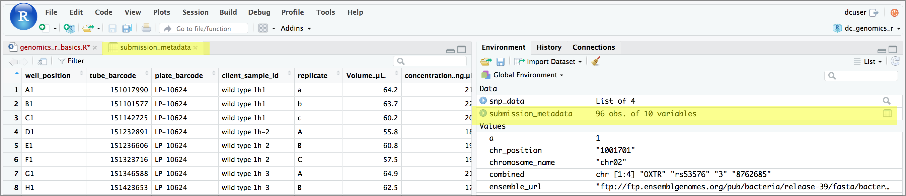

R Basics continued - factors and data frames
Overview
Teaching: 60 min
Exercises: 30 minQuestions
How do I get started with tabular data (e.g. spreadsheets) in R?
What are some best practices for reading data into R?
How do I save tabular data generated in R?
Objectives
Explain the basic principle of tidy datasets
Be able to load a tabular dataset using base R functions
Be able to determine the structure of a data frame including its dimensions and the datatypes of variables
Be able to subset/retrieve values from a data frame
Understand how R may coerce data into different modes
Be able to change the mode of an object
Understand that R uses factors to store and manipulate categorical data
Be able to manipulate a factor, including subsetting and reordering
Be able to apply an arithmetic function to a data frame
Be able to coerce the class of an object (including variables in a data frame)
Be able to import data from Excel
Be able to save a data frame as a delimited file
Working with spreadsheets (tabular data)
A substantial amount of the data we work with in genomics will be tabular data, this is data arranged in rows and columns - also known as spreadsheets. We could write a whole lesson on how to work with spreadsheets effectively (actually we did). For our purposes, we want to remind you of a few principles before we work with our first set of example data:
1) Keep raw data separate from analyzed data
This is principle number one because if you can’t tell which files are the original raw data, you risk making some serious mistakes (e.g. drawing conclusion from data which have been manipulated in some unknown way).
2) Keep spreadsheet data Tidy
The simplest principle of Tidy data is that we have one row in our spreadsheet for each observation or sample, and one column for every variable that we measure or report on. As simple as this sounds, it’s very easily violated. Most data scientists agree that significant amounts of their time is spent tidying data for analysis. Read more about data organization in our lesson and in this paper.
3) Trust but verify
Finally, while you don’t need to be paranoid about data, you should have a plan for how you will prepare it for analysis. This a focus of this lesson. You probably already have a lot of intuition, expectations, assumptions about your data - the range of values you expect, how many values should have been recorded, etc. Of course, as the data get larger our human ability to keep track will start to fail (and yes, it can fail for small data sets too). R will help you to examine your data so that you can have greater confidence in your analysis, and its reproducibility.
Tip: Keeping you raw data separate
When you work with data in R, you are not changing the original file you loaded that data from. This is different than (for example) working with a spreadsheet program where changing the value of the cell leaves you one “save”-click away from overwriting the original file. You have to purposely use a writing function (e.g.
write.csv()) to save data loaded into R. In that case, be sure to save the manipulated data into a new file. More on this later in the lesson.
Importing tabular data into R
There are several ways to import data into R. For our purpose here, we will
focus on using the tools every R installation comes with (so called “base” R) to
import a comma-delimited file containing the results of our variant calling workflow.
We will need to load the sheet using a function called read.csv().
Exercise: Review the arguments of the
read.csv()functionBefore using the
read.csv()function, use R’s help feature to answer the following questions.Hint: Entering ‘?’ before the function name and then running that line will bring up the help documentation. Also, when reading this particular help be careful to pay attention to the ‘read.csv’ expression under the ‘Usage’ heading. Other answers will be in the ‘Arguments’ heading.
A) What is the default parameter for ‘header’ in the
read.csv()function?B) What argument would you have to change to read a file that was delimited by semicolons (;) rather than commas?
C) What argument would you have to change to read file in which numbers used commas for decimal separation (i.e. 1,00)?
D) What argument would you have to change to read in only the first 10,000 rows of a very large file?
Solution
A) The
read.csv()function has the argument ‘header’ set to TRUE by default, this means the function always assumes the first row is header information, (i.e. column names)B) The
read.csv()function has the argument ‘sep’ set to “,”. This means the function assumes commas are used as delimiters, as you would expect. Changing this parameter (e.g.sep=";") would now interpret semicolons as delimiters.C) Although it is not listed in the
read.csv()usage,read.csv()is a “version” of the functionread.table()and accepts all its arguments. If you setdec=","you could change the decimal operator. We’d probably assume the delimiter is some other character.D) You can set
nrowto a numeric value (e.g.nrow=10000) to choose how many rows of a file you read in. This may be useful for very large files where not all the data is needed to test some data cleaning steps you are applying.Hopefully, this exercise gets you thinking about using the provided help documentation in R. There are many arguments that exist, but which we wont have time to cover. Look here to get familiar with functions you use frequently, you may be surprised at what you find they can do.
Now, let’s read in the file combined_tidy_vcf.csv which will be located in
/home/dcuser/.solutions/R_data/. Call this data variants. The
first argument to pass to our read.csv() function is the file path for our
data. The file path must be in quotes and now is a good time to remember to
use tab autocompletion. If you use tab autocompletion you avoid typos and
errors in file paths. Use it!
## read in a CSV file and save it as 'variants'
variants <- read.csv("../r_data/combined_tidy_vcf.csv")
One of the first things you should notice is that in the Environment window,
you have the variants object, listed as 801 obs. (observations/rows)
of 29 variables (columns). Double-clicking on the name of the object will open
a view of the data in a new tab.

Summarizing and determining the structure of a data frame.
A data frame is the standard way in R to store tabular data. A data fame could also be thought of as a collection of vectors, all of which have the same length. Using only two functions, we can learn a lot about out data frame including some summary statistics as well as well as the “structure” of the data frame. Let’s examine what each of these functions can tell us:
## get summary statistics on a data frame
summary(variants)
sample_id CHROM POS ID
Length:801 Length:801 Min. : 1521 Mode:logical
Class :character Class :character 1st Qu.:1115970 NA's:801
Mode :character Mode :character Median :2290361
Mean :2243682
3rd Qu.:3317082
Max. :4629225
REF ALT QUAL FILTER
Length:801 Length:801 Min. : 4.385 Mode:logical
Class :character Class :character 1st Qu.:139.000 NA's:801
Mode :character Mode :character Median :195.000
Mean :172.276
3rd Qu.:225.000
Max. :228.000
INDEL IDV IMF DP
Mode :logical Min. : 2.000 Min. :0.5714 Min. : 2.00
FALSE:700 1st Qu.: 7.000 1st Qu.:0.8824 1st Qu.: 7.00
TRUE :101 Median : 9.000 Median :1.0000 Median :10.00
Mean : 9.396 Mean :0.9219 Mean :10.57
3rd Qu.:11.000 3rd Qu.:1.0000 3rd Qu.:13.00
Max. :20.000 Max. :1.0000 Max. :79.00
NA's :700 NA's :700
VDB RPB MQB BQB
Min. :0.0005387 Min. :0.0000 Min. :0.0000 Min. :0.1153
1st Qu.:0.2180410 1st Qu.:0.3776 1st Qu.:0.1070 1st Qu.:0.6963
Median :0.4827410 Median :0.8663 Median :0.2872 Median :0.8615
Mean :0.4926291 Mean :0.6970 Mean :0.5330 Mean :0.7784
3rd Qu.:0.7598940 3rd Qu.:1.0000 3rd Qu.:1.0000 3rd Qu.:1.0000
Max. :0.9997130 Max. :1.0000 Max. :1.0000 Max. :1.0000
NA's :773 NA's :773 NA's :773
MQSB SGB MQ0F ICB
Min. :0.01348 Min. :-0.6931 Min. :0.00000 Mode:logical
1st Qu.:0.95494 1st Qu.:-0.6762 1st Qu.:0.00000 NA's:801
Median :1.00000 Median :-0.6620 Median :0.00000
Mean :0.96428 Mean :-0.6444 Mean :0.01127
3rd Qu.:1.00000 3rd Qu.:-0.6364 3rd Qu.:0.00000
Max. :1.01283 Max. :-0.4536 Max. :0.66667
NA's :48
HOB AC AN DP4 MQ
Mode:logical Min. :1 Min. :1 Length:801 Min. :10.00
NA's:801 1st Qu.:1 1st Qu.:1 Class :character 1st Qu.:60.00
Median :1 Median :1 Mode :character Median :60.00
Mean :1 Mean :1 Mean :58.19
3rd Qu.:1 3rd Qu.:1 3rd Qu.:60.00
Max. :1 Max. :1 Max. :60.00
Indiv gt_PL gt_GT gt_GT_alleles
Length:801 Length:801 Min. :1 Length:801
Class :character Class :character 1st Qu.:1 Class :character
Mode :character Mode :character Median :1 Mode :character
Mean :1
3rd Qu.:1
Max. :1
Our data frame had 29 variables, so we get 29 fields that summarize the data.
The QUAL, IMF, and VDB variables (and several others) are
numerical data and so you get summary statistics on the min and max values for
these columns, as well as mean, median, and interquartile ranges. Many of the other variables
(e.g. sample_id) are treated as categorical data (which have special
treatment in R - more on this in a bit). The most frequent 6 different categories and the
number of times they appear (e.g. the sample_id called ‘SRR2584863’ appeared 25 times)
are displayed. There was only one value for CHROM, “CP000819.1” which appeared
in all 801 observations.
Before we operate on the data, we also need to know a little more about the
data frame structure to do that we use the str() function:
## get the structure of a data frame
str(variants)
'data.frame': 801 obs. of 29 variables:
$ sample_id : chr "SRR2584863" "SRR2584863" "SRR2584863" "SRR2584863" ...
$ CHROM : chr "CP000819.1" "CP000819.1" "CP000819.1" "CP000819.1" ...
$ POS : int 9972 263235 281923 433359 473901 648692 1331794 1733343 2103887 2333538 ...
$ ID : logi NA NA NA NA NA NA ...
$ REF : chr "T" "G" "G" "CTTTTTTT" ...
$ ALT : chr "G" "T" "T" "CTTTTTTTT" ...
$ QUAL : num 91 85 217 64 228 210 178 225 56 167 ...
$ FILTER : logi NA NA NA NA NA NA ...
$ INDEL : logi FALSE FALSE FALSE TRUE TRUE FALSE ...
$ IDV : int NA NA NA 12 9 NA NA NA 2 7 ...
$ IMF : num NA NA NA 1 0.9 ...
$ DP : int 4 6 10 12 10 10 8 11 3 7 ...
$ VDB : num 0.0257 0.0961 0.7741 0.4777 0.6595 ...
$ RPB : num NA 1 NA NA NA NA NA NA NA NA ...
$ MQB : num NA 1 NA NA NA NA NA NA NA NA ...
$ BQB : num NA 1 NA NA NA NA NA NA NA NA ...
$ MQSB : num NA NA 0.975 1 0.916 ...
$ SGB : num -0.556 -0.591 -0.662 -0.676 -0.662 ...
$ MQ0F : num 0 0.167 0 0 0 ...
$ ICB : logi NA NA NA NA NA NA ...
$ HOB : logi NA NA NA NA NA NA ...
$ AC : int 1 1 1 1 1 1 1 1 1 1 ...
$ AN : int 1 1 1 1 1 1 1 1 1 1 ...
$ DP4 : chr "0,0,0,4" "0,1,0,5" "0,0,4,5" "0,1,3,8" ...
$ MQ : int 60 33 60 60 60 60 60 60 60 60 ...
$ Indiv : chr "/home/dcuser/dc_workshop/results/bam/SRR2584863.aligned.sorted.bam" "/home/dcuser/dc_workshop/results/bam/SRR2584863.aligned.sorted.bam" "/home/dcuser/dc_workshop/results/bam/SRR2584863.aligned.sorted.bam" "/home/dcuser/dc_workshop/results/bam/SRR2584863.aligned.sorted.bam" ...
$ gt_PL : chr "121,0" "112,0" "247,0" "91,0" ...
$ gt_GT : int 1 1 1 1 1 1 1 1 1 1 ...
$ gt_GT_alleles: chr "G" "T" "T" "CTTTTTTTT" ...
Ok, thats a lot up unpack! Some things to notice.
- the object type
data.frameis displayed in the first row along with its dimensions, in this case 801 observations (rows) and 29 variables (columns) - Each variable (column) has a name (e.g.
sample_id). This is followed by the object mode (e.g. factor, int, num, etc.). Notice that before each variable name there is a$- this will be important later.
Introducing Factors
Factors are the final major data structure we will introduce in our R genomics lessons. Factors can be thought of as vectors which are specialized for categorical data. Given R’s specialization for statistics, this make sense since categorial and continuous variables usually have different treatments. Sometimes you may want to have data treated as a factor, but in other cases, this may be undesirable.
Since some of the data in our data frame are factors, lets see how factors work. First, we’ll
extract one of the columns of our data frame to a new object, so that we don’t end up
modifying the variants object by mistake.
## extract the "REF" column to a new object
REF <- variants$REF
Let’s look at the first few items in our factor using head():
head(REF)
[1] "T" "G" "G" "CTTTTTTT" "CCGC" "C"
What we get back are the items in our factor, and also something called “Levels”. Levels are the different categories contained in a factor. By default, R will organize the levels in a factor in alphabetical order. So the first level in this factor is “A”.
Lets look at the contents of a factor in a slightly different way using str():
str(REF)
chr [1:801] "T" "G" "G" "CTTTTTTT" "CCGC" "C" "C" "G" ...
For the sake of efficiency, R stores the content of a factor as a vector of integers, which an integer is assigned to each of the possible levels. Recall levels are assigned in alphabetical order. In this case, the first item in our “REF” object is “T”, which happens to be the 49th level of our factor, ordered alphabeticaly. The next two items are both “G”s, which is the 33rd level of our factor.
Plotting and ordering factors
One of the most common uses for factors will be when you plot categorical values. For example, suppose we want to know how many of our variants had each possible nucleotide (or nucleotide combination) in the reference genome? We could generate a plot:
plot(REF)
Warning in xy.coords(x, y, xlabel, ylabel, log): NAs introduced by coercion
Warning in min(x): no non-missing arguments to min; returning Inf
Warning in max(x): no non-missing arguments to max; returning -Inf
Error in plot.window(...): need finite 'ylim' values

This isn’t a particularly pretty example of a plot. We’ll be learning much more about creating nice, publication-quality graphics later in this lesson.
Subsetting data frames
Next, we are going to talk about how you can get specific values from data frames, and where necessary, change the mode of a column of values.
The first thing to remember is that a data frame is two-dimensional (rows and
columns). Therefore, to select a specific value we will will once again use
[] (bracket) notation, but we will specify more than one value (except in some cases
where we are taking a range).
Exercise: Subsetting a data frame
Try the following indices and functions and try to figure out what they return
a.
variants[1,1]b.
variants[2,4]c.
variants[801,29]d.
variants[2, ]e.
variants[-1, ]f.
variants[1:4,1]g.
variants[1:10,c("REF","ALT")]h.
variants[,c("sample_id")]i.
head(variants)j.
tail(variants)k.
variants$sample_idl.
variants[variants$REF == "A",]Solution
a.
variants[1,1][1] "SRR2584863"b.
variants[2,4][1] NAc.
variants[801,29][1] "T"d.
variants[2, ]sample_id CHROM POS ID REF ALT QUAL FILTER INDEL IDV IMF DP VDB 2 SRR2584863 CP000819.1 263235 NA G T 85 NA FALSE NA NA 6 0.096133 RPB MQB BQB MQSB SGB MQ0F ICB HOB AC AN DP4 MQ 2 1 1 1 NA -0.590765 0.166667 NA NA 1 1 0,1,0,5 33 Indiv gt_PL 2 /home/dcuser/dc_workshop/results/bam/SRR2584863.aligned.sorted.bam 112,0 gt_GT gt_GT_alleles 2 1 Te.
variants[-1, ]sample_id CHROM POS ID REF ALT QUAL FILTER INDEL IDV IMF 2 SRR2584863 CP000819.1 263235 NA G T 85 NA FALSE NA NA 3 SRR2584863 CP000819.1 281923 NA G T 217 NA FALSE NA NA 4 SRR2584863 CP000819.1 433359 NA CTTTTTTT CTTTTTTTT 64 NA TRUE 12 1.0 5 SRR2584863 CP000819.1 473901 NA CCGC CCGCGC 228 NA TRUE 9 0.9 6 SRR2584863 CP000819.1 648692 NA C T 210 NA FALSE NA NA 7 SRR2584863 CP000819.1 1331794 NA C A 178 NA FALSE NA NA DP VDB RPB MQB BQB MQSB SGB MQ0F ICB HOB AC AN DP4 MQ 2 6 0.096133 1 1 1 NA -0.590765 0.166667 NA NA 1 1 0,1,0,5 33 3 10 0.774083 NA NA NA 0.974597 -0.662043 0.000000 NA NA 1 1 0,0,4,5 60 4 12 0.477704 NA NA NA 1.000000 -0.676189 0.000000 NA NA 1 1 0,1,3,8 60 5 10 0.659505 NA NA NA 0.916482 -0.662043 0.000000 NA NA 1 1 1,0,2,7 60 6 10 0.268014 NA NA NA 0.916482 -0.670168 0.000000 NA NA 1 1 0,0,7,3 60 7 8 0.624078 NA NA NA 0.900802 -0.651104 0.000000 NA NA 1 1 0,0,3,5 60 Indiv gt_PL 2 /home/dcuser/dc_workshop/results/bam/SRR2584863.aligned.sorted.bam 112,0 3 /home/dcuser/dc_workshop/results/bam/SRR2584863.aligned.sorted.bam 247,0 4 /home/dcuser/dc_workshop/results/bam/SRR2584863.aligned.sorted.bam 91,0 5 /home/dcuser/dc_workshop/results/bam/SRR2584863.aligned.sorted.bam 255,0 6 /home/dcuser/dc_workshop/results/bam/SRR2584863.aligned.sorted.bam 240,0 7 /home/dcuser/dc_workshop/results/bam/SRR2584863.aligned.sorted.bam 208,0 gt_GT gt_GT_alleles 2 1 T 3 1 T 4 1 CTTTTTTTT 5 1 CCGCGC 6 1 T 7 1 Af.
variants[1:4,1][1] "SRR2584863" "SRR2584863" "SRR2584863" "SRR2584863"g.
variants[1:10,c("REF","ALT")]REF 1 T 2 G 3 G 4 CTTTTTTT 5 CCGC 6 C 7 C 8 G 9 ACAGCCAGCCAGCCAGCCAGCCAGCCAGCCAG 10 AT ALT 1 G 2 T 3 T 4 CTTTTTTTT 5 CCGCGC 6 T 7 A 8 A 9 ACAGCCAGCCAGCCAGCCAGCCAGCCAGCCAGCCAGCCAGCCAGCCAGCCAGCCAG 10 ATTh.
variants[,c("sample_id")][1] "SRR2584863" "SRR2584863" "SRR2584863" "SRR2584863" "SRR2584863" [6] "SRR2584863"i.
head(variants)sample_id CHROM POS ID REF ALT QUAL FILTER INDEL IDV IMF 1 SRR2584863 CP000819.1 9972 NA T G 91 NA FALSE NA NA 2 SRR2584863 CP000819.1 263235 NA G T 85 NA FALSE NA NA 3 SRR2584863 CP000819.1 281923 NA G T 217 NA FALSE NA NA 4 SRR2584863 CP000819.1 433359 NA CTTTTTTT CTTTTTTTT 64 NA TRUE 12 1.0 5 SRR2584863 CP000819.1 473901 NA CCGC CCGCGC 228 NA TRUE 9 0.9 6 SRR2584863 CP000819.1 648692 NA C T 210 NA FALSE NA NA DP VDB RPB MQB BQB MQSB SGB MQ0F ICB HOB AC AN DP4 MQ 1 4 0.0257451 NA NA NA NA -0.556411 0.000000 NA NA 1 1 0,0,0,4 60 2 6 0.0961330 1 1 1 NA -0.590765 0.166667 NA NA 1 1 0,1,0,5 33 3 10 0.7740830 NA NA NA 0.974597 -0.662043 0.000000 NA NA 1 1 0,0,4,5 60 4 12 0.4777040 NA NA NA 1.000000 -0.676189 0.000000 NA NA 1 1 0,1,3,8 60 5 10 0.6595050 NA NA NA 0.916482 -0.662043 0.000000 NA NA 1 1 1,0,2,7 60 6 10 0.2680140 NA NA NA 0.916482 -0.670168 0.000000 NA NA 1 1 0,0,7,3 60 Indiv gt_PL 1 /home/dcuser/dc_workshop/results/bam/SRR2584863.aligned.sorted.bam 121,0 2 /home/dcuser/dc_workshop/results/bam/SRR2584863.aligned.sorted.bam 112,0 3 /home/dcuser/dc_workshop/results/bam/SRR2584863.aligned.sorted.bam 247,0 4 /home/dcuser/dc_workshop/results/bam/SRR2584863.aligned.sorted.bam 91,0 5 /home/dcuser/dc_workshop/results/bam/SRR2584863.aligned.sorted.bam 255,0 6 /home/dcuser/dc_workshop/results/bam/SRR2584863.aligned.sorted.bam 240,0 gt_GT gt_GT_alleles 1 1 G 2 1 T 3 1 T 4 1 CTTTTTTTT 5 1 CCGCGC 6 1 Tj.
tail(variants)sample_id CHROM POS ID REF ALT QUAL FILTER INDEL IDV IMF DP 796 SRR2589044 CP000819.1 3444175 NA G T 184 NA FALSE NA NA 9 797 SRR2589044 CP000819.1 3481820 NA A G 225 NA FALSE NA NA 12 798 SRR2589044 CP000819.1 3893550 NA AG AGG 101 NA TRUE 4 1 4 799 SRR2589044 CP000819.1 3901455 NA A AC 70 NA TRUE 3 1 3 800 SRR2589044 CP000819.1 4100183 NA A G 177 NA FALSE NA NA 8 801 SRR2589044 CP000819.1 4431393 NA TGG T 225 NA TRUE 10 1 10 VDB RPB MQB BQB MQSB SGB MQ0F ICB HOB AC AN DP4 MQ 796 0.4714620 NA NA NA 0.992367 -0.651104 0 NA NA 1 1 0,0,4,4 60 797 0.8707240 NA NA NA 1.000000 -0.680642 0 NA NA 1 1 0,0,4,8 60 798 0.9182970 NA NA NA 1.000000 -0.556411 0 NA NA 1 1 0,0,3,1 52 799 0.0221621 NA NA NA NA -0.511536 0 NA NA 1 1 0,0,3,0 60 800 0.9272700 NA NA NA 0.900802 -0.651104 0 NA NA 1 1 0,0,3,5 60 801 0.7488140 NA NA NA 1.007750 -0.670168 0 NA NA 1 1 0,0,4,6 60 Indiv gt_PL 796 /home/dcuser/dc_workshop/results/bam/SRR2589044.aligned.sorted.bam 214,0 797 /home/dcuser/dc_workshop/results/bam/SRR2589044.aligned.sorted.bam 255,0 798 /home/dcuser/dc_workshop/results/bam/SRR2589044.aligned.sorted.bam 131,0 799 /home/dcuser/dc_workshop/results/bam/SRR2589044.aligned.sorted.bam 100,0 800 /home/dcuser/dc_workshop/results/bam/SRR2589044.aligned.sorted.bam 207,0 801 /home/dcuser/dc_workshop/results/bam/SRR2589044.aligned.sorted.bam 255,0 gt_GT gt_GT_alleles 796 1 T 797 1 G 798 1 AGG 799 1 AC 800 1 G 801 1 Tk.
variants$sample_id[1] "SRR2584863" "SRR2584863" "SRR2584863" "SRR2584863" "SRR2584863" [6] "SRR2584863"l.
variants[variants$REF == "A",]sample_id CHROM POS ID REF ALT QUAL FILTER INDEL IDV IMF DP 11 SRR2584863 CP000819.1 2407766 NA A C 104 NA FALSE NA NA 9 12 SRR2584863 CP000819.1 2446984 NA A C 225 NA FALSE NA NA 20 14 SRR2584863 CP000819.1 2665639 NA A T 225 NA FALSE NA NA 19 16 SRR2584863 CP000819.1 3339313 NA A C 211 NA FALSE NA NA 10 18 SRR2584863 CP000819.1 3481820 NA A G 200 NA FALSE NA NA 9 19 SRR2584863 CP000819.1 3488669 NA A C 225 NA FALSE NA NA 13 VDB RPB MQB BQB MQSB SGB MQ0F ICB HOB AC 11 0.0230738 0.900802 0.150134 0.750668 0.500000 -0.590765 0.333333 NA NA 1 12 0.0714027 NA NA NA 1.000000 -0.689466 0.000000 NA NA 1 14 0.9960390 NA NA NA 1.000000 -0.690438 0.000000 NA NA 1 16 0.4059360 NA NA NA 1.007750 -0.670168 0.000000 NA NA 1 18 0.1070810 NA NA NA 0.974597 -0.662043 0.000000 NA NA 1 19 0.0162706 NA NA NA 1.000000 -0.680642 0.000000 NA NA 1 AN DP4 MQ 11 1 3,0,3,2 25 12 1 0,0,10,6 60 14 1 0,0,12,5 60 16 1 0,0,4,6 60 18 1 0,0,4,5 60 19 1 0,0,8,4 60 Indiv gt_PL 11 /home/dcuser/dc_workshop/results/bam/SRR2584863.aligned.sorted.bam 131,0 12 /home/dcuser/dc_workshop/results/bam/SRR2584863.aligned.sorted.bam 255,0 14 /home/dcuser/dc_workshop/results/bam/SRR2584863.aligned.sorted.bam 255,0 16 /home/dcuser/dc_workshop/results/bam/SRR2584863.aligned.sorted.bam 241,0 18 /home/dcuser/dc_workshop/results/bam/SRR2584863.aligned.sorted.bam 230,0 19 /home/dcuser/dc_workshop/results/bam/SRR2584863.aligned.sorted.bam 255,0 gt_GT gt_GT_alleles 11 1 C 12 1 C 14 1 T 16 1 C 18 1 G 19 1 C
The subsetting notation is very similar to what we learned for vectors. The key differences include:
- Typically provide two values separated by commas: data.frame[row, column]
- In cases where you are taking a continuous range of numbers use a colon between the numbers (start:stop, inclusive)
- For a non continuous set of numbers, pass a vector using
c() - Index using the name of a column(s) by passing them as vectors using
c()
Finally, in all of the subsetting exercises above, we printed values to the screen. You can create a new data frame object by assigning them to a new object name:
# create a new data frame containing only observations from SRR2584863
SRR2584863_variants <- variants[variants$sample_id == "SRR2584863",]
# check the dimension of the data frame
dim(SRR2584863_variants)
[1] 25 29
# get a summary of the data frame
summary(SRR2584863_variants)
sample_id CHROM POS ID
Length:25 Length:25 Min. : 9972 Mode:logical
Class :character Class :character 1st Qu.:1331794 NA's:25
Mode :character Mode :character Median :2618472
Mean :2464989
3rd Qu.:3488669
Max. :4616538
REF ALT QUAL FILTER
Length:25 Length:25 Min. : 31.89 Mode:logical
Class :character Class :character 1st Qu.:104.00 NA's:25
Mode :character Mode :character Median :211.00
Mean :172.97
3rd Qu.:225.00
Max. :228.00
INDEL IDV IMF DP
Mode :logical Min. : 2.00 Min. :0.6667 Min. : 2.0
FALSE:19 1st Qu.: 3.25 1st Qu.:0.9250 1st Qu.: 9.0
TRUE :6 Median : 8.00 Median :1.0000 Median :10.0
Mean : 7.00 Mean :0.9278 Mean :10.4
3rd Qu.: 9.75 3rd Qu.:1.0000 3rd Qu.:12.0
Max. :12.00 Max. :1.0000 Max. :20.0
NA's :19 NA's :19
VDB RPB MQB BQB
Min. :0.01627 Min. :0.9008 Min. :0.04979 Min. :0.7507
1st Qu.:0.07140 1st Qu.:0.9275 1st Qu.:0.09996 1st Qu.:0.7627
Median :0.37674 Median :0.9542 Median :0.15013 Median :0.7748
Mean :0.40429 Mean :0.9517 Mean :0.39997 Mean :0.8418
3rd Qu.:0.65951 3rd Qu.:0.9771 3rd Qu.:0.57507 3rd Qu.:0.8874
Max. :0.99604 Max. :1.0000 Max. :1.00000 Max. :1.0000
NA's :22 NA's :22 NA's :22
MQSB SGB MQ0F ICB
Min. :0.5000 Min. :-0.6904 Min. :0.00000 Mode:logical
1st Qu.:0.9599 1st Qu.:-0.6762 1st Qu.:0.00000 NA's:25
Median :0.9962 Median :-0.6620 Median :0.00000
Mean :0.9442 Mean :-0.6341 Mean :0.04667
3rd Qu.:1.0000 3rd Qu.:-0.6168 3rd Qu.:0.00000
Max. :1.0128 Max. :-0.4536 Max. :0.66667
NA's :3
HOB AC AN DP4 MQ
Mode:logical Min. :1 Min. :1 Length:25 Min. :10.00
NA's:25 1st Qu.:1 1st Qu.:1 Class :character 1st Qu.:60.00
Median :1 Median :1 Mode :character Median :60.00
Mean :1 Mean :1 Mean :55.52
3rd Qu.:1 3rd Qu.:1 3rd Qu.:60.00
Max. :1 Max. :1 Max. :60.00
Indiv gt_PL gt_GT gt_GT_alleles
Length:25 Length:25 Min. :1 Length:25
Class :character Class :character 1st Qu.:1 Class :character
Mode :character Mode :character Median :1 Mode :character
Mean :1
3rd Qu.:1
Max. :1
Coercing values in data frames
Tip: coercion isn’t limited to data frames
While we are going to address coercion in the context of data frames most of these methods apply to other data structures, such as vectors
Sometimes, it is possible that R will misinterpret the type of data represented in a data frame, or store that data in a mode which prevents you from operating on the data the way you wish. For example, a long list of gene names isn’t usually thought of as a categorical variable, the way that your experimental condition (e.g. control, treatment) might be. More importantly, some R packages you use to analyze your data may expect characters as input, not factors. At other times (such as plotting or some statistical analyses) a factor may be more appropriate. Ultimately, you should know how to change the mode of an object.
First, its very important to recognize that coercion happens in R all the time. This can be a good thing when R gets it right, or a bad thing when the result is not what you expect. Consider:
snp_chromosomes <- c('3', '11', 'X', '6')
typeof(snp_chromosomes)
[1] "character"
Although there are several numbers in our vector, they are all in quotes, so we have explicitly told R to consider them as characters. However, even if we removed the quotes from the numbers, R would coerce everything into a character:
snp_chromosomes_2 <- c(3, 11, 'X', 6)
typeof(snp_chromosomes_2)
[1] "character"
snp_chromosomes_2[1]
[1] "3"
We can use the as. functions to explicitly coerce values from one form into
another. Consider the following vector of characters, which all happen to be
valid numbers:
snp_positions_2 <- c("8762685", "66560624", "67545785", "154039662")
typeof(snp_positions_2)
[1] "character"
snp_positions_2[1]
[1] "8762685"
Now we can coerce snp_positions_2 into a numeric type using as.numeric():
snp_positions_2 <- as.numeric(snp_positions_2)
typeof(snp_positions_2)
[1] "double"
snp_positions_2[1]
[1] 8762685
Sometimes coercion is straight forward, but what would happen if we tried
using as.numeric() on snp_chromosomes_2
snp_chromosomes_2 <- as.numeric(snp_chromosomes_2)
Warning: NAs introduced by coercion
If we check, we will see that an NA value (R’s default value for missing
data) has been introduced.
snp_chromosomes_2
[1] 3 11 NA 6
Trouble can really start when we try to coerce a factor. For example, when we
try to coerce the sample_id column in our data frame into a numeric mode
look at the result:
as.numeric(variants$sample_id)
Warning: NAs introduced by coercion
[1] NA NA NA NA NA NA NA NA NA NA NA NA NA NA NA NA NA NA NA NA NA NA NA NA NA
[26] NA NA NA NA NA NA NA NA NA NA NA NA NA NA NA NA NA NA NA NA NA NA NA NA NA
[51] NA NA NA NA NA NA NA NA NA NA NA NA NA NA NA NA NA NA NA NA NA NA NA NA NA
[76] NA NA NA NA NA NA NA NA NA NA NA NA NA NA NA NA NA NA NA NA NA NA NA NA NA
[101] NA NA NA NA NA NA NA NA NA NA NA NA NA NA NA NA NA NA NA NA NA NA NA NA NA
[126] NA NA NA NA NA NA NA NA NA NA NA NA NA NA NA NA NA NA NA NA NA NA NA NA NA
[151] NA NA NA NA NA NA NA NA NA NA NA NA NA NA NA NA NA NA NA NA NA NA NA NA NA
[176] NA NA NA NA NA NA NA NA NA NA NA NA NA NA NA NA NA NA NA NA NA NA NA NA NA
[201] NA NA NA NA NA NA NA NA NA NA NA NA NA NA NA NA NA NA NA NA NA NA NA NA NA
[226] NA NA NA NA NA NA NA NA NA NA NA NA NA NA NA NA NA NA NA NA NA NA NA NA NA
[251] NA NA NA NA NA NA NA NA NA NA NA NA NA NA NA NA NA NA NA NA NA NA NA NA NA
[276] NA NA NA NA NA NA NA NA NA NA NA NA NA NA NA NA NA NA NA NA NA NA NA NA NA
[301] NA NA NA NA NA NA NA NA NA NA NA NA NA NA NA NA NA NA NA NA NA NA NA NA NA
[326] NA NA NA NA NA NA NA NA NA NA NA NA NA NA NA NA NA NA NA NA NA NA NA NA NA
[351] NA NA NA NA NA NA NA NA NA NA NA NA NA NA NA NA NA NA NA NA NA NA NA NA NA
[376] NA NA NA NA NA NA NA NA NA NA NA NA NA NA NA NA NA NA NA NA NA NA NA NA NA
[401] NA NA NA NA NA NA NA NA NA NA NA NA NA NA NA NA NA NA NA NA NA NA NA NA NA
[426] NA NA NA NA NA NA NA NA NA NA NA NA NA NA NA NA NA NA NA NA NA NA NA NA NA
[451] NA NA NA NA NA NA NA NA NA NA NA NA NA NA NA NA NA NA NA NA NA NA NA NA NA
[476] NA NA NA NA NA NA NA NA NA NA NA NA NA NA NA NA NA NA NA NA NA NA NA NA NA
[501] NA NA NA NA NA NA NA NA NA NA NA NA NA NA NA NA NA NA NA NA NA NA NA NA NA
[526] NA NA NA NA NA NA NA NA NA NA NA NA NA NA NA NA NA NA NA NA NA NA NA NA NA
[551] NA NA NA NA NA NA NA NA NA NA NA NA NA NA NA NA NA NA NA NA NA NA NA NA NA
[576] NA NA NA NA NA NA NA NA NA NA NA NA NA NA NA NA NA NA NA NA NA NA NA NA NA
[601] NA NA NA NA NA NA NA NA NA NA NA NA NA NA NA NA NA NA NA NA NA NA NA NA NA
[626] NA NA NA NA NA NA NA NA NA NA NA NA NA NA NA NA NA NA NA NA NA NA NA NA NA
[651] NA NA NA NA NA NA NA NA NA NA NA NA NA NA NA NA NA NA NA NA NA NA NA NA NA
[676] NA NA NA NA NA NA NA NA NA NA NA NA NA NA NA NA NA NA NA NA NA NA NA NA NA
[701] NA NA NA NA NA NA NA NA NA NA NA NA NA NA NA NA NA NA NA NA NA NA NA NA NA
[726] NA NA NA NA NA NA NA NA NA NA NA NA NA NA NA NA NA NA NA NA NA NA NA NA NA
[751] NA NA NA NA NA NA NA NA NA NA NA NA NA NA NA NA NA NA NA NA NA NA NA NA NA
[776] NA NA NA NA NA NA NA NA NA NA NA NA NA NA NA NA NA NA NA NA NA NA NA NA NA
[801] NA
Strangely, it works! Almost. Instead of giving an error message, R returns numeric values, which in this case are the integers assigned to the levels in this factor. This kind of behavior can lead to hard-to-find bugs, for example when we do have numbers in a factor, and we get numbers from a coercion. If we don’t look carefully, we may not notice a problem.
If you need to coerce an entire column you can overwrite it using an expression like this one:
# make the 'REF' column a character type column
variants$REF <- as.character(variants$REF)
# check the type of the column
typeof(variants$REF)
[1] "character"
StringsAsFactors = FALSE
Lets summarize this section on coercion with a few take home messages.
- When you explicitly coerce one data type into another (this is known as explicit coercion), be careful to check the result. Ideally, you should try to see if its possible to avoid steps in your analysis that force you to coerce.
- R will sometimes coerce without you asking for it. This is called (appropriately) implicit coercion. For example when we tried to create a vector with multiple data types, R chose one type through implicit coercion.
- Check the structure (
str()) of your data frames before working with them!
Regarding the first bullet point, one way to avoid needless coercion when
importing a data frame using any one of the read.table() functions such as
read.csv() is to set the argument StringsAsFactors to FALSE. By default,
this argument is TRUE. Setting it to FALSE will treat any non-numeric column to
a character type. read.csv() documentation, you will also see you can
explicitly type your columns using the colClasses argument. Other R packages
(such as the Tidyverse “readr”) don’t have this particular conversion issue,
but many packages will still try to guess a data type.
Data frame bonus material: math, sorting, renaming
Here are a few operations that don’t need much explanation, but which are good to know.
There are lots of arithmetic functions you may want to apply to your data frame, covering those would be a course in itself (there is some starting material here). Our lessons will cover some additional summary statistical functions in a subsequent lesson, but overall we will focus on data cleaning and visualization.
You can use functions like mean(), min(), max() on an
individual column. Let’s look at the “DP” or filtered depth. This value shows the number of filtered
reads that support each of the reported variants.
max(variants$DP)
[1] 79
You can sort a data frame using the order() function:
sorted_by_DP <- variants[order(variants$DP), ]
head(sorted_by_DP$DP)
[1] 2 2 2 2 2 2
Exercise
The
order()function lists values in increasing order by default. Look at the documentation for this function and changesorted_by_DPto start with variants with the greatest filtered depth (“DP”).Solution
sorted_by_DP <- variants[order(variants$DP, decreasing = TRUE), ] head(sorted_by_DP$DP)[1] 79 46 41 29 29 27
You can rename columns:
colnames(variants)[colnames(variants) == "sample_id"] <- "strain"
# check the column name (hint names are returned as a vector)
colnames(variants)
[1] "strain" "CHROM" "POS" "ID"
[5] "REF" "ALT" "QUAL" "FILTER"
[9] "INDEL" "IDV" "IMF" "DP"
[13] "VDB" "RPB" "MQB" "BQB"
[17] "MQSB" "SGB" "MQ0F" "ICB"
[21] "HOB" "AC" "AN" "DP4"
[25] "MQ" "Indiv" "gt_PL" "gt_GT"
[29] "gt_GT_alleles"
Saving your data frame to a file
We can save data to a file. We will save our SRR2584863_variants object
to a .csv file using the write.csv() function:
write.csv(SRR2584863_variants, file = "../data/SRR2584863_variants.csv")
The write.csv() function has some additional arguments listed in the help, but
at a minimum you need to tell it what data frame to write to file, and give a
path to a file name in quotes (if you only provide a file name, the file will
be written in the current working directory).
Importing data from Excel
Excel is one of the most common formats, so we need to discuss how to make these files play nicely with R. The simplest way to import data from Excel is to save your Excel file in .csv format*. You can then import into R right away. Sometimes you may not be able to do this (imagine you have data in 300 Excel files, are you going to open and export all of them?).
One common R package (a set of code with features you can download and add to your R installation) is the readxl package which can open and import Excel files. Rather than addressing package installation this second (we’ll discuss this soon!), we can take advantage of RStudio’s import feature which integrates this package. (Note: this feature is available only in the latest versions of RStudio such as is installed on our cloud instance).
First, in the RStudio menu go to File, select Import Dataset, and choose From Excel… (notice there are several other options you can explore).

Next, under File/Url: click the Browse button and navigate to the Ecoli_metadata.xlsx file located at /home/dcuser/dc_sample_data/R.
You should now see a preview of the data to be imported:

Notice that you have the option to change the data type of each variable by clicking arrow (drop-down menu) next to each column title. Under Import Options you may also rename the data, choose a different sheet to import, and choose how you will handle headers and skipped rows. Under Code Preview you can see the code that will be used to import this file. We could have written this code and imported the Excel file without the RStudio import function, but now you can choose your preference.
In this exercise, we will leave the title of the data frame as Ecoli_metadata, and there are no other options we need to adjust. Click the Import button to import the data.
Finally, let’s check the first few lines of the Ecoli_metadata data
frame:
Error: `path` does not exist: '../data/Ecoli_metadata.xlsx'
head(Ecoli_metadata)
Error in head(Ecoli_metadata): object 'Ecoli_metadata' not found
The type of this object is ‘tibble’, a type of data
frame we will talk more about in the ‘dplyr’ section. If you needed
a true R data frame you could coerce with as.data.frame().
Exercise: Putting it all together - data frames
Using the
Ecoli_metadatadata frame created above, answer the following questionsA) What are the dimensions (# rows, # columns) of the data frame?
B) What are categories are there in the
citcolumn? hint: treat column as factorC) How many of each of the
citcategories are there?D) What is the genome size for the 7th observation in this data set?
E) What is the median value of the variable
genome_sizeF) Rename the column
sampletosample_idG) Create a new column (name genome_size_bp) and set it equal to the genome_size multiplied by 1,000,000
H) Save the edited Ecoli_metadata data frame as “exercise_solution.csv” in your current working directory.
Solution
dim(Ecoli_metadata)Error in eval(expr, envir, enclos): object 'Ecoli_metadata' not foundlevels(as.factor(Ecoli_metadata$cit))Error in is.factor(x): object 'Ecoli_metadata' not foundtable(as.factor(Ecoli_metadata$cit))Error in is.factor(x): object 'Ecoli_metadata' not foundEcoli_metadata[7,7]Error in eval(expr, envir, enclos): object 'Ecoli_metadata' not foundmedian(Ecoli_metadata$genome_size)Error in median(Ecoli_metadata$genome_size): object 'Ecoli_metadata' not foundcolnames(Ecoli_metadata)[colnames(Ecoli_metadata) == "sample"] <- "sample_id"Error in colnames(Ecoli_metadata)[colnames(Ecoli_metadata) == "sample"] <- "sample_id": object 'Ecoli_metadata' not foundEcoli_metadata$genome_size_bp <- Ecoli_metadata$genome_size * 1000000Error in eval(expr, envir, enclos): object 'Ecoli_metadata' not foundwrite.csv(Ecoli_metadata, file = "exercise_solution.csv")Error in is.data.frame(x): object 'Ecoli_metadata' not found
Key Points
It is easy to import data into R from tabular formats including Excel. However, you still need to check that R has imported and interpreted your data correctly
There are best practices for organizing your data (keeping it tidy) and R is great for this
Base R has many useful functions for manipulating your data, but all of R’s capabilities are greatly enhanced by software packages developed by the community